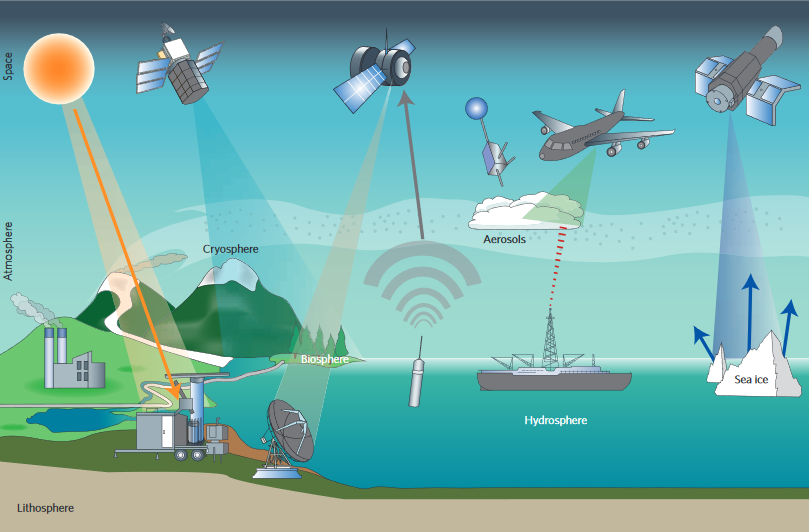

Fundamentos
La Teledetección o Percepción Remota se define como la ciencia de adquirir información acerca de la superficie de la Tierra sin estar en contacto directo con ella. Esto se realiza detectando y registrando la energía reflejada o emitida y procesando, analizando y aplicando esa información (Centro de Canadá para la Percepción Remota).
En términos generales, se basas en tres procesos diferenciados:
- La captura de datos,
- La transmisión de éstos, y
- El análisis de los mismos.

Ilustración: Yang et al. 2013 (10.1038/NCLIMATE1908)